changemaker. disrupter. innovator. bold. leader. courageous
changemaker.
disrupter.
innovator.
bold.
leader.
courageous

About Me
_
Educational Background
_
Strengths & Weaknesses
_
Values & Principles
_
Vision & Mission
_
Achievements & Milestones
_
Best Works
_
[ Back to menu ]
Loading introduction…
Try again